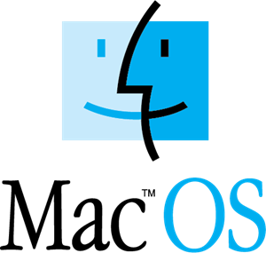

macOS is a series of graphical operating systems developed and marketed by Apple Inc. since 2001. It is the primary operating system for Apple's Mac family of computers. Within the market of desktop, laptop and home computers, and by web usage, it is the second most widely used desktop OS, after Microsoft Windows.
macOS is the second major series of Macintosh operating systems. The first is colloquially called the "classic" Mac OS, which was introduced in 1984, and the final release of which was Mac OS 9 in 1999. The first desktop version, Mac OS X 10.0, was released in March 2001, with its first update, 10.1, arriving later that year. After this, Apple began naming its releases after big cats, which lasted until OS X 10.8 Mountain Lion. Since OS X 10.9 Mavericks, releases have been named after landmarks in California. Apple shortened the name to "OS X" in 2012 and then changed it to "macOS" in 2016, adopting the nomenclature that they were using for their other operating systems, iOS, watchOS, and tvOS. The latest version is macOS High Sierra, which was publicly released in September 2017.
Source: Wikipedia click here
"With ordinary talent and extraordinary perseverance, all the things are attainable"- Thomas F. Buxton